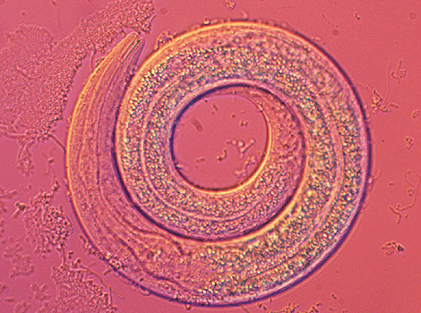

Nematodos
Los Nematodos, Nematoda, son un filo de animales conocidos popularmente como gusanos redondos por la forma de su cuerpo. Su característica principal que les diferencia de otros filos de gusanos es que son pseudocelomados, es decir, su mesodermo sólo invade parcialmente el blastocele durante el desarrollo embrionario por lo que este queda reducido a espacios intersticiales.
La reproducción de los nematodos se puede dar por partenogénesis pero es bastante más habitual que se reproduzcan sexualmente. En la mayoría de casos se pueden distinguir los dos sexos, aunque algunas especies son hermafroditas. Durante el acto sexual, una espícula sale de la cloaca del macho y se introduce en el poro genital de la hembra, por lo tanto se trata de una fecundación interna. La hembra es capaz de gestar desde centenares de crías hasta varios millones, siempre a través de la formación de huevos.
El ciclo de vida que tienen los nematodos depende de su hábitat y de si son formas libres o parásitas. En las formas libres, normalmente efectúan unas cuatro mudas de piel a lo largo de su vida. Se alimentan de materiales diversos, incluyendo algas, hongos, animales pequeños, materia fecal y restos de otros animales. Tienen un papel importante en procesos de descomposición.
Entre las enfermedades en humanos causadas por los nematodos destacan la anisakiasis, que se puede transmitir mediante la ingesta de pescado crudo, la triquinosis, la anquilostomiasis y la elefantiasis.

A pesar de ser organismos ampliamente estudiados, todavía se desconocen algunas de sus características y hay muchas incógnitas por resolver a la hora de clasificarlos correctamente. Sin embargo, en el pasado sí hay un acuerdo en la comunidad científica para dividir a los nematodos en dos clases: los adenofóreos y los secernénteos. Lamentablemente los estudios moleculares más recientes no concuerdan con esta clasificación y actualmente se conocen 5 clases diferentes: Secernentea, Chromadorea, Monhysterida, Dorylaimida, y Enoplea.
Es el grupo principal de nematodos, incluyendo algunas de las especies de gusanos redondos más conocidas como Caenorhabditis elegans, ampliamente usado en investigación. Normalmente viven en tierra, los machos poseen un testículo y su aparato secretor es tubular.
Normalmente viven en sedimentos marinos, aunque también habitan otros lugares. Se caracterizan por tener una faringe más sofisticada que los demás nematodos. Los choromadorea generalmente presentan estructuras similares a anillos a lo largo de su cuerpo y tienen tres glándulas esofágicas.
Los Monhysterida se caracterizan por tener unos poros en forma de embudo que les permiten el intercambio de gases y que acostumbran a estar cuticularizados. Pueden presentar diferentes tipos de dientes, pero a diferencia de otros nematodos, los de este grupo pueden sacar los dientes al exterior.
Estos animales acostumbran a vivir en suelos húmedos, especialmente cerca de las raíces de las plantas. La gran mayoría de dorylaimida presentan vida libre y muchos de ellos son depredadores, alimentándose de bacterias u otros microorganismos. También pueden parasitar plantas y hongos y para ello tienen unas estructuras bucales en forma de estilete que les ayudan a perforar las paredes de sus hospedadores.
Los enoplea tienen un esófago cilíndrico o en forma de botella y unos poros superficiales en forma de bolsillos. La mayoría de ellos son lisos, aunque algunos están marcados por líneas finas. Su sistema excretor es más sencillo que el de los otros grupos de nematodos.